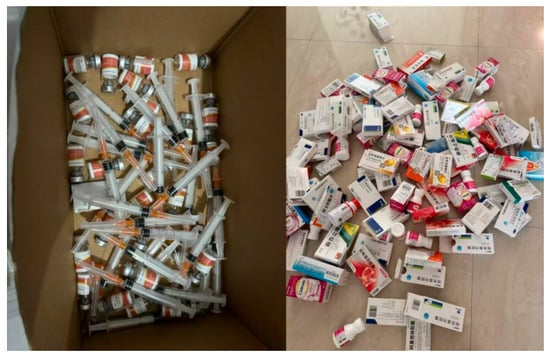

- Age 30
- 8 years with lupus
- Photovoice study, 8 Chinese women
No one keeps empty medicine boxes.
When the medicine is gone, the box has no more meaning. We throw it away, like everything we no longer need.
But Juzi did something different. She collected them.
Juzi is 30. She has lived with lupus for eight years, a companion she did not choose. She looked at what treatment had left behind: empty boxes, empty bottles, used injection materials. She did not throw them away. She put them together in one picture.
Many women in the study said that treatment is work that repeats again and again. It is tiring, and it is hard to explain to other people. It is effort without witnesses. Nobody applauds it, and nobody sees it.
Effort that nobody sees is like a price paid every day without a receipt. It is paid, and then nothing remains to show it.
The boxes could have been a sign of weakness. Every day they could have said that her body needs help to go on, and that medicine is a crutch she cannot put down.
But Juzi read them in another way. She said she likes collecting them. Then she gave them a name:
“…proof that I’ve been persisting and fighting against lupus.”

Here the story changes. The price that was paid without a receipt now has receipts, and they fill the picture. Every box is a receipt. Every bottle is a receipt. Every injection tool is a receipt for a day that was done and not forgotten. The researchers saw that her collage made the hidden work of treatment tangible and countable.
An illness that cannot be seen is often asked for proof. It is as if Juzi did not wait to be asked. She collected her proof with her own hands.
Maybe the picture was not only for her. Maybe it was a silent message to people who cannot see: this is what it takes to keep going.
Eight years. Many empty boxes. And one woman who was not emptied.
A question for you: When you look at your own treatment routine, what does it show about your effort? You can bring your answer to your next visit.
Prepare for your visit →Medical point (general information, not from the article): Taking your medicine as planned matters in lupus. If the routine is hard or you miss many doses, tell your care team. They may be able to make the schedule simpler. Do not stop or change a medicine on your own. It does not replace your doctor’s advice.
About this source
Xu N, Xiang H, Hou Y. Picturing Illness, Making Meaning: A Virtual Photovoice Study of Systemic Lupus Erythematosus Narratives Among Chinese Women. Behavioral Sciences. 2026;16(7):1197. doi:10.3390/bs16071197. Open access under a CC BY (Creative Commons Attribution) license; see the article page for the exact terms. Adapted by NA7N: retold in a literary form. The illustration was made with AI (Canva) by us. The authors have not reviewed or endorsed this version.
Quote: Juzi (a pseudonym), quoted in Xu, Xiang & Hou, 2026.
Image: from the study itself, content unchanged. Its title in the article: “Juzi’s collage”.
The literary text is based on the photo and on what the study reports.
From the article itself
- Juzi (a pseudonym) is 30 and has lived with lupus for 8 years.
- She made a collage of empty medicine boxes, bottles and injection materials.
- She said she likes collecting the boxes, as proof that she has been persisting and fighting against lupus.
- Many women in the study described treatment as repetitive, exhausting and hard to explain to others.
- The researchers say her collage made the hidden work of treatment tangible and countable.
- Everything else, such as the receipts, the crutch and the silent message, is our own wording and imagination.
Not everyone living with lupus feels this way, and that is okay. This is not medical advice.